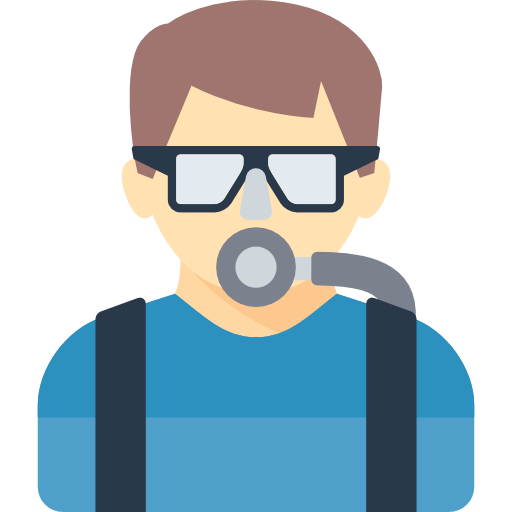

Conceptos:
-Planificaion de procesos, mediante Round robin y prioridad
-Gestion de recursos compartidos(tenedores)
-Planificaion de procesos, mediante Round robin y prioridad
-Gestion de recursos compartidos(tenedores)
El filosofo está comiendo
1
La filosofa está comiendo
2 
5
El filosofo está comiendo
El filosofo está comiendo
3 
 4
4
La filosofa está comiendo
Cinco filosofos sentados alrededor de una mesa distribuian su tiempo entre comer
y pensar, cada filosofo contaba con un tenedor. Necesitaban encontrar una forma de
que todos cenaran, para lo cual requerian cada uno 2 de los 5 tenedores que habian
disponibles. El metodo que emplearon para solucionar esta situacion fue la de distribuir
turnadamente de derecha a izquierda los tenedores de forma intercalada y determinando un tiempo
maximo que se durarian en rotar los tenedores hasta completar un ciclo, realizando
este proceso durante todo el tiempo que estuviesen en la mesa sin correr el peligro
de morir de hambre.